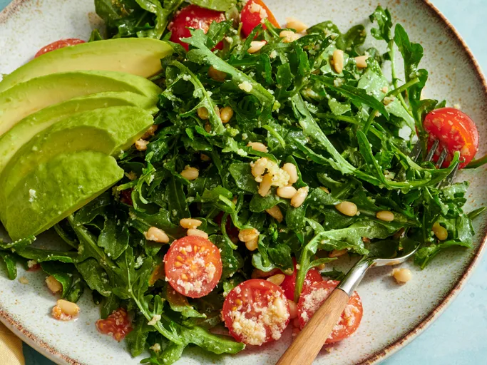

Easy Arugula Salad

Description
This simple arugula salad is so easy even I can make it — and I'm a
beginning cook! It looks very presentable for guests and takes only
minutes to make.
Home
Ingredients
- 4 cups young arugula leaves, rinsed and dried
- 1 cup cherry tomatoes, halved
- ¼ cup pine nuts
- ¼ cup grated Parmesan cheese
- 2 tablespoons grapeseed or olive oil
- 1 tablespoon rice vinegar
- salt and freshly ground black pepper to taste
- 1 large avocado - peeled, pitted, and sliced
Steps
-
Combine arugula, tomatoes, pine nuts, Parmesan, oil, and vinegar in a
large, lidded plastic bowl. Season with salt and pepper, then cover with
the lid and shake to mix.
- Divide salad onto serving plates and top with avocado slices.